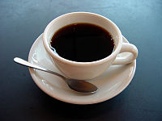

Café

Ingredientes:
- 10 colheres (sopa) de pó de café;
- 1 litro de água filtrada.
Modo de preparo:
- Coloque o filtro de papel no coador e encaixe sobre uma jarra ou garrafa térmica;
- Coloque a água num fervedor e leve ao fogo médio para aquecer. Atenção: não deixe a água ferver, assim que começarem a subir as primeiras bolhinhas desligue o fogo – se a água estiver muito quente pode queimar o pó e deixar o café amargo em excesso;
- Regue um pouco da água quente sobre o filtro sem o café – é bem pouco mesmo, apenas para aquecer o filtro e o coador e eliminar qualquer aroma indesejado do papel. Despreze a água;
- Coloque o pó de café no filtro umedecido e regue apenas a quantidade suficiente de água quente para umedecer todo o pó. Deixe hidratar por alguns segundos e regue o restante da água, em movimento circular para coar todo o pó por igual. Deixe o café coar sem mexer. Sirva a seguir.